ENG 331 · Instructions
How to Make Video Game Music
Part 1Learn the Building Blocks
Before writing a song, learn each piece that goes into one. Go through these lessons in order, because each one builds on the last.
-
Key Signature
A key signature shows how many sharps or flats a song's key has. A song's key tells you which notes should be consistently raised or lowered throughout the song.
There are two standard types of keys: major and minor. A major key sounds happy and bright, while a minor key sounds sadder or darker. In video games, major is used to show wonder, safety, and adventure, while minor is used to show danger, sorrow, or epic battles and events.
Major example: "Overworld Theme" from Super Mario Bros.
A classic example of a major-key gaming track. It uses C major to create a safe, bouncy, bright, fun feeling.
Listen to the Overworld Theme. Watch on YouTube Minor example: "Sealed Vessel" from Hollow Knight
This song from Hollow Knight is a great example of how large orchestral arrangements and minor keys can make a fight feel overly epic and the boss imposing and terrifying.
Listen to Sealed Vessel. Watch on YouTube The main difference between major and minor keys is the lowering of the 3rd, 6th, and 7th notes by half a step. For example, a C major triad is C E G, and a C minor triad is C E♭ G, lowering the 3rd by half a step, or flattening it.
Since three notes get lowered, going from a major key to the minor key with the same starting note basically adds three flats. For example, C major has no sharps or flats, so its notes are C, D, E, F, G, A, B. When you switch to C minor, the 3rd, 6th, and 7th get flattened, so its notes are C, D, E♭, F, G, A♭, B♭.
Being in C major or C minor means C is the "home" note of the song; it's the note the song feels like it should start and end on. The difference is which notes surround it. C major uses only the white keys on a piano, which gives it a bright, happy sound, while C minor has E♭, A♭, and B♭, which gives it the sadder, darker sound you heard in the minor example above.
Tip When making your first songs, it is strongly advised to pick an "easy key," so a key with only 1 or 2 sharps or flats, or none at all. You don't need to learn every key yet; in Part 2, we'll give you a few easy ones to pick from. -
Basic Music Theory
- [Notes, scales, and intervals]
- [Rhythm basics: beats, measures, and tempo]
- [Time signatures, e.g. 4/4]
- [What a chord is and how it is built from a scale]
-
Bass Line
Bass lines are the lower-pitched background section that gives music its rhythmic feeling. Melodies alone can be nice, but without a bass line, they can often feel shallow, especially for slower songs.
Making bass lines is much different than making melodies. Bass lines are, by design, repetitive. A bass line will often repeat the same note or pattern from measure to measure while the melody changes. Bass lines should also be kept simple; the job of a bass line is not to be a counter melody; it's meant to support your melody.
Bass lines can generally be divided into 4 groups:
1. Up/down loop
The notes move up and down in a repeating pattern. This also includes 2 notes being repeated OR repeating the same note multiple times while still following the general pattern. It also includes going up and resetting at the bottom.
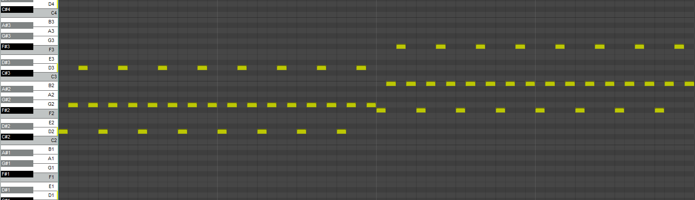
Basic example of an up/down loop bass line. Example from a popular game song: Asgore (Undertale)
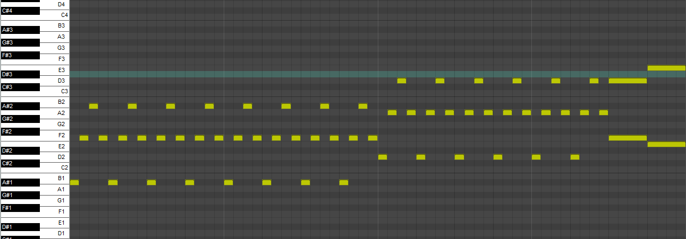
The bass line from Asgore. Listen to Asgore. Watch on YouTube 2. Repeat note
Repeat the same note and only change on certain beats or between measures. Generally, the notes will be fast or in a complex pattern but will only change pitch between measures.
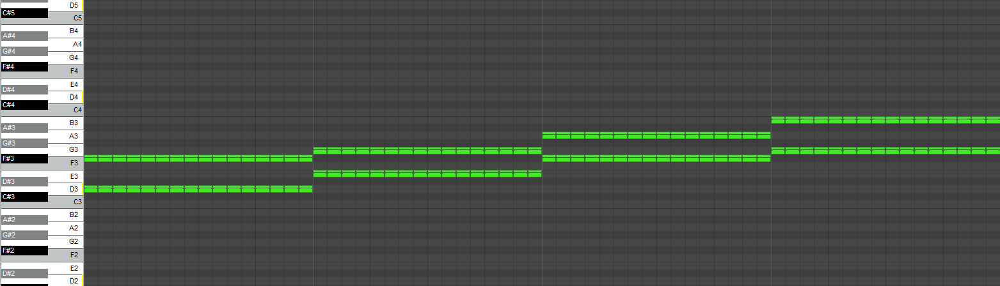
Basic example of a repeat-note bass line. Example from a popular game song: Megalovania (Undertale)
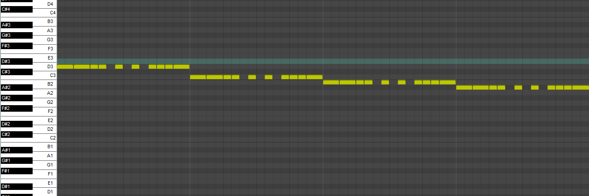
The bass line from Megalovania. Listen to Megalovania. Watch on YouTube 3. Complex
Complex bass lines typically switch from one of the first 2 types to the other mid-measure, every measure.
They can also be treated as a counter-melody to the main melody. (Basically, have the main melody go fast when the bass line goes slow and vice versa.)
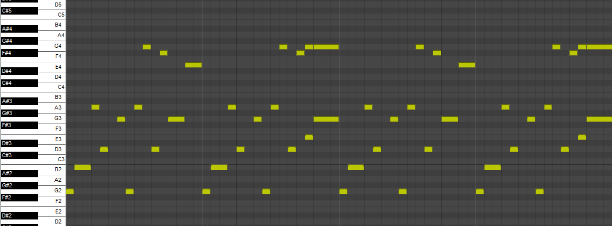
Basic example of a complex bass line. Example from a popular game song: The Only Thing I Know For Real (Metal Gear Rising: Revengeance)
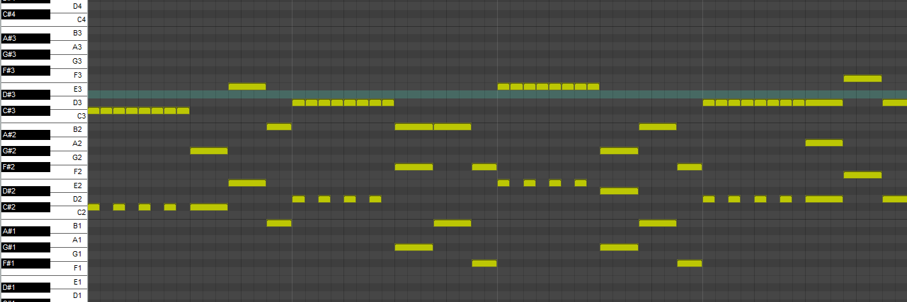
The bass line from The Only Thing I Know For Real. Listen to The Only Thing I Know For Real. Watch on YouTube 4. Melody conversion
The melody becomes the bass line. It should be treated like a bass line, not a melody. It will often shift down an octave when the 2nd (overtaking) melody begins.
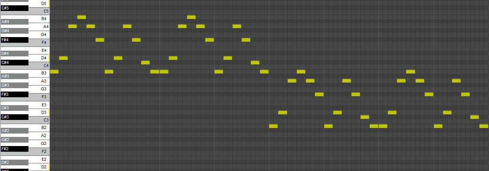
Basic example of melody conversion. Example from a popular game song: Aria Math (Minecraft)
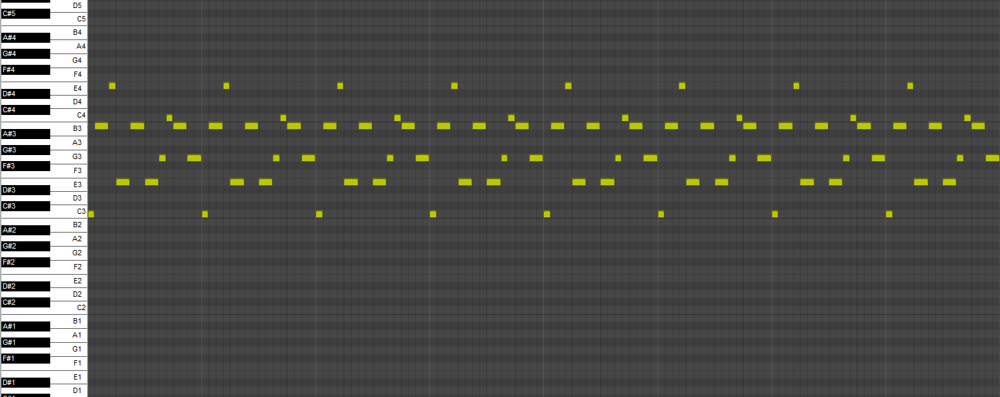
The bass line from Aria Math. Listen to Aria Math. Watch on YouTube -
Melody
- [What a melody is: the main tune people remember and hum]
- [Writing a melody using notes from your key]
- [Step-wise motion vs. leaps; repetition and variation]
- [Fitting the melody over the bass line]
-
Supporting Background Elements
Background elements are supporting sections that help fill out a song's sound. Unlike bass lines, they generally don't have a rhythm and are sustained throughout a given measure, meaning the note starts at the beginning of the measure and stops at the end. These mainly consist of chords, arpeggios, or matching notes from the melody.
Background elements shouldn't be too loud or too prominent; when done right, listeners shouldn't even notice they exist unless they're really paying attention.
-
Extra Flair + Chords
The last part you will create for your song is the "flair". Flair parts have no real definition or structure; they are basically extra bits you add to spice up your song. Despite their loose definition, flair is extremely important in your songs. It's what really distinguishes good songs from great ones, more than any basic theory could.
Examples include super-high notes playing a basic pattern, an extra instrument playing certain parts of the melody to make it sound more intense, or playing full chords during certain parts of your melody instead of just using them as a base. These are some examples that could help inspire you:
An extra instrument playing the melody
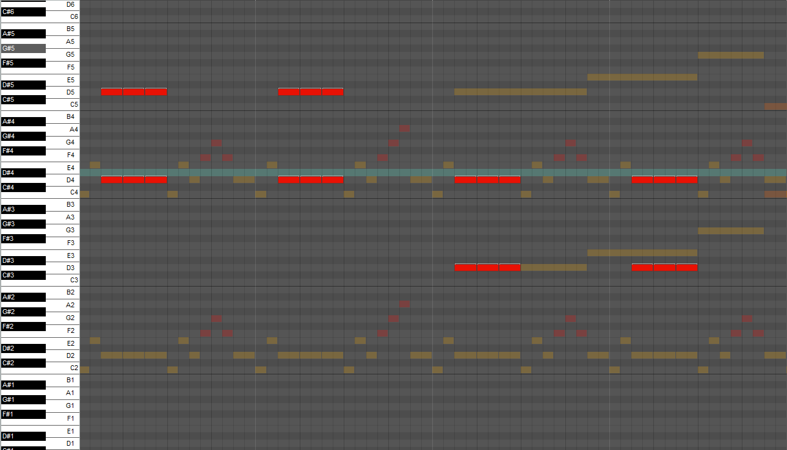
A second instrument joins in on parts of the melody to make it sound more intense. Chords in the melody
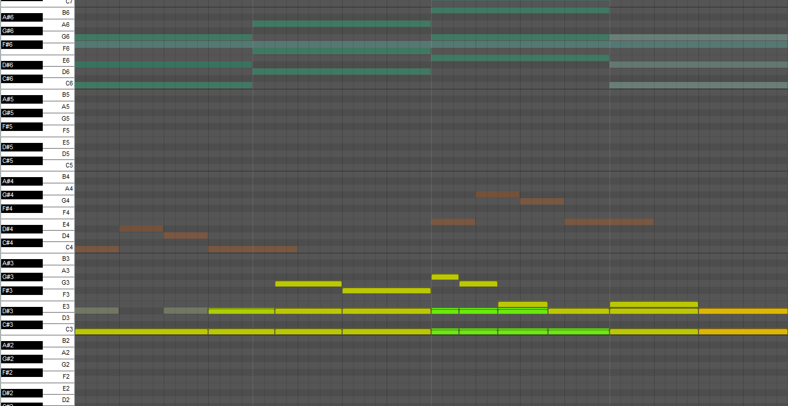
Some melody notes are played as full chords instead of single notes. High bonus notes in a basic pattern
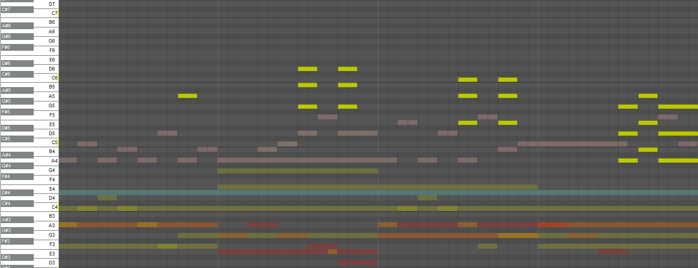
Super-high notes play a simple pattern above the rest of the song. Make sure that any flair you add still keeps to the key signature and rhythm. If it doesn't, it can make your song harder to listen to or make it sound like noise pollution. There is no consistent way to add flair to songs; the best way to do it well is to just practice and keep trying new things with every song you make.
Flair can also include things like effects and volume changes, but those are quite complicated, so we won't go over them here.
-
Structure
A song's structure is the order its sections play in. Most songs you hear on the radio are built from verses, choruses, and bridges, but video game music works differently. A player might stay in one area for a few seconds or for an hour, so instead of playing once from start to finish, game music is made to repeat.
Because of this, game songs are mainly built around the loop. The loop is the most important part of almost every game song. It's the main body of the song, and it repeats for as long as the player stays in that area. The end of the loop should flow right back into the beginning, so the player doesn't notice where it restarts.
Melody structure inside the loop
When looking only at the melody within a single loop, composers often skip the verse–chorus format and use classical or thematic forms instead:
In Part 2, you'll write a loop. It will use an ABA structure inside it: section A, then a contrasting section B, then section A again, so the end leads smoothly back to the start.
Part 2Write Your Own Song
Now use what you learned to write a complete short song. Follow these steps in order.
-
Pick a key signature
Pick a key based on the kind of song you want to make. If you want a happy, bright, or adventurous song, pick a major key. If you want a sad, dark, or tense song, pick a minor key.
Here are a few easy keys to start with, along with the notes in each one. Any note not listed as a sharp or flat is played normally.
Major keys (happy, bright)
- C major: no sharps or flats (C, D, E, F, G, A, B)
- G major: has F# (G, A, B, C, D, E, F#)
- D major: has F# and C# (D, E, F#, G, A, B, C#). The bass line examples in step 3 are in this key.
- F major: has B♭ (F, G, A, B♭, C, D, E)
Minor keys (sad, dark)
- A minor: no sharps or flats (A, B, C, D, E, F, G)
- E minor: has F# (E, F#, G, A, B, C, D)
- D minor: has B♭ (D, E, F, G, A, B♭, C)
For example, if you pick G major, every F in your song should be played as F#. If you pick A minor, you only use the white keys on a piano.
-
Plan your structure
Your song will use an ABA structure: section A, then a contrasting section B, then section A again. Together, these three sections are your main loop, the part of the song that repeats for as long as the player stays in that part of the game.
ABAA, B, A is the main loop and repeats.
Make A and B clearly different
It's important to clearly distinguish the A section from the B section. If they sound too similar, the loop will feel like one long, repetitive section, and the player will get tired of it faster. B should feel like a change of scenery, while still sounding like it belongs to the same song. You can set B apart by changing things like:
- the mood, for example a calmer or more intense feel
- the rhythm of the melody or bass line
- the chords you use
- the instruments, or how high or low the melody sits
Keep both sections in the same key so the song still feels connected. A good starting length is 8 measures for each section, but you can change this to fit your song.
End the way you started
Because the loop repeats, the end of your song leads straight back into its beginning. Try to end the loop similarly to how you started it, using the same notes, chords, or rhythm. This is a big reason the ABA structure works so well: the second A section brings back the opening material, so the jump from the last measure back to the first sounds natural. That way, your loop sounds like one cohesive piece instead of having a noticeable "seam" every time it restarts.
-
Pick a bass line for section A
The first part of the song you will make is the bass line. You don't always need to start here, but it can be really helpful for making your melody later.
To get started, choose one of these simple bass line types from the earlier examples. (Complex and Melody Conversion are skipped here because they are difficult to use without much experience.)
Up/down: higher intensity, works well with slow melodies
Up/down bass line in D major. You can add more notes to the pattern to make it calmer. Repeat note: works universally, generally best for build-ups and background music
Repeat-note bass line in D major. Changing the key
These bass lines are all in D major; if you chose a different key signature, you will need to transpose them. Doing this is quite simple (for these examples, at least). Take the first note shown, in this case D, and put your key signature's note there instead. Then move every other note so it stays the same distance from your new note. For example, if you chose C major, D would become C and F# would become E.
Before: D major 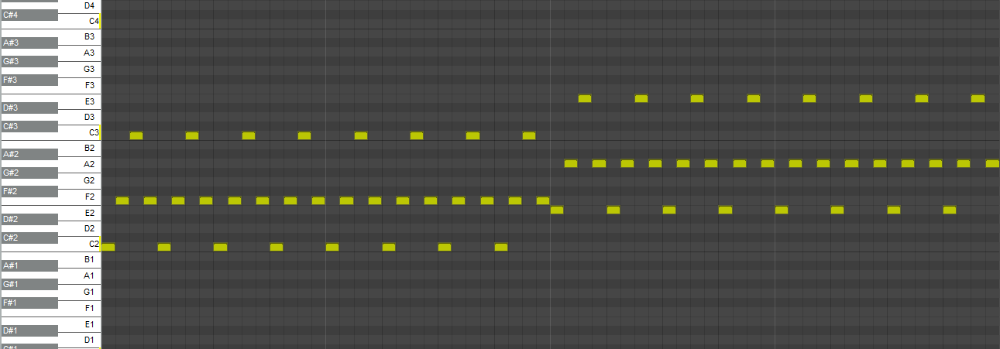
After: C major If you'd like, you can change some of the notes around as well, but make sure to keep the bass line simple and consistent!
Tip Make sure that when you create the bass line, you use the correct octave! Bass lines should generally stay within the 2nd and 3rd octaves so they don't overlap with your melody. (The octave is the number shown beside the note names, like the 2 in D2.)The last part of your bass line is picking an instrument. Your choice should depend heavily on the type of song you are making.
Instrument choices: Staccato or "plucky" sounding instruments, such as guitars, basses, or pianos. It's best to avoid more legato, or "smooth"-sounding, instruments like strings and brass.That's it for your bass line! All you have to do is make your bass line repeat until this section of the song ends.
-
Create a melody for section A
[Write a melody over your bass line using notes from your key.]
Instrument choices: [Pick your melody instrument] -
Add background elements to section A
For your background elements, pick one of the three types: chords, arpeggios, or matching notes.
Once you pick one, you can start adding it to your song. As a general rule of thumb, the background section should sit between your melody and bass line in terms of pitch. Usually, there will be 2 octaves between the bass line and the melody. If there isn't an octave gap, try to keep the background elements around octaves 3 and 4.
Instrument choices: [Pick your background instruments] -
Add flair to section A
For your flair, you should mainly focus on 2 things: chords and "bonus notes".
Chords are just individual notes from your melody turned into chords. This usually works best if done only once per measure, or even only a few times per section. Inverted chords often work best, but if they don't sound right, you can also try keeping the original note in the middle or top of the chord.
Example of adding chords to a song
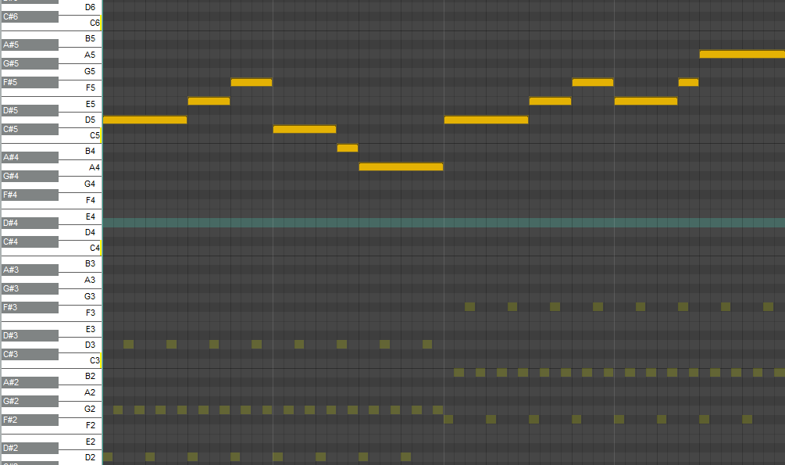
Before 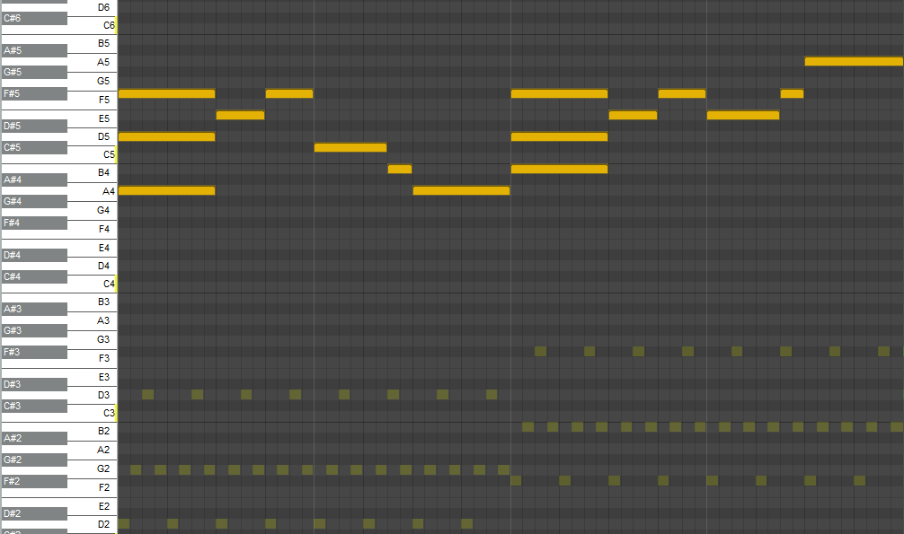
After Bonus notes have the volume and sound of the melody but are entirely disconnected from it. These include the super-high notes in a basic pattern mentioned before, or lower notes doing something similar. These notes should generally follow your key signature's arpeggios, but they don't have to. They work best at the start of a particular beat in a measure, such as the first or third beat.
Example of adding bonus notes to a song
These notes use a different instrument; the "before" version would simply be the song without them. For your song, try adding both of these throughout. If you can't get them to sound good, don't include them. You don't need to force them into the song if they don't work. Also, don't try to use them everywhere; use them only in certain sections, or even only specific parts of certain sections.
Instrument choices: [Pick your flair instruments] -
Repeat steps 3–6 for section B
[Build section B the same way: bass line, melody, background, then flair.]
Tip [Make B feel different from A, for example by changing chords, rhythm, or instruments, while staying in the same key.] -
Connect the sections
[Link your sections so the song flows smoothly from start to finish.]
- [Connect A → B: e.g. a fill, a build-up, or a chord that leads into B]
- [Connect B → A: e.g. a pause or a transition that brings back the A melody]
- [Play the whole song A–B–A from start to finish to check it]
Part 3Going Further
You've written your first song. These topics will help you with future songs.
-
Percussion in Music
- [What percussion adds: rhythm, energy, and drive]
- [Basic drum parts: kick, snare, hi-hat]
- [Simple beginner beat patterns]
-
More Complex Use of Volume
- [Dynamics: playing loud vs. soft]
- [Crescendos and decrescendos to build and release tension]
- [Balancing instrument volumes in a mix]
-
Using Inspiration to Write Songs
- [Learning from songs you like: what makes them work?]
- [Turning feelings, stories, or places into musical ideas]
- [Keeping an idea notebook or voice memos]
Conclusion
[Wrap up: recap what the reader learned and created, and encourage them to keep writing.]